島根ワイナリーでワインソフトを食べました。
2025/08/11
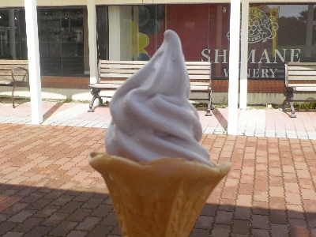
お盆休み中なので普通だったら混むので行かないんですが、前日に豪雨があったため観光客が激減しているようだったので島根ワイナリーに行きました。
確かに道が空いてて、何の問題もなくワイナリーに到着しました。
売店もそんなに人が並んでないし、ベンチも空いてるので、のんびり座ってソフトクリームが食べれました。快適です。
ワインソフトは甘すぎず、ちょっとシャーベットっぽい感じでひんやりしてて美味しかったです。
島根県出雲市大社町菱根264-2
2025/08/11

お盆休み中なので普通だったら混むので行かないんですが、前日に豪雨があったため観光客が激減しているようだったので島根ワイナリーに行きました。
確かに道が空いてて、何の問題もなくワイナリーに到着しました。
売店もそんなに人が並んでないし、ベンチも空いてるので、のんびり座ってソフトクリームが食べれました。快適です。
ワインソフトは甘すぎず、ちょっとシャーベットっぽい感じでひんやりしてて美味しかったです。
2025/05/04
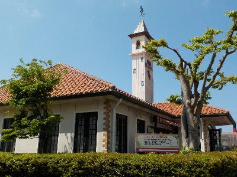
島根ワイナリーはゴールデンウィークフェスティバルでにぎわっていました。
山野草展がしていたので見たんですが、奇麗なので野草って感じがしませんでした。なんか素朴感が足りない。
500円くらいの手に取りやすい商品があったので買ってもよかったんですが、私は鳥が運んできたタネが発芽したものの方がいいかなと思って買いませんでした。
家の庭に生えてる木や草を、鉢に植えて育ててみようかなと思いました。
2024/11/16
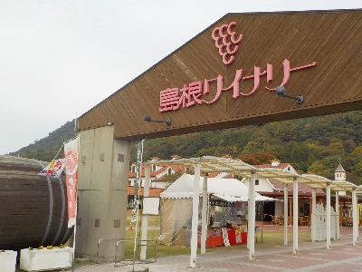
只今出雲大社は神在祭中なので屋台が出ていました。
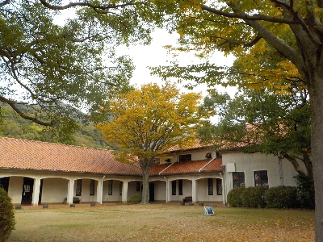
ワイナリーの中は紅葉が始まっていて、落ち着いたいい雰囲気でした。
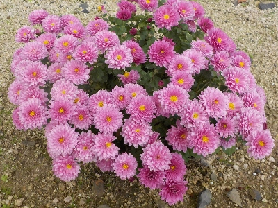
ピンクの菊がキレイの咲いていました。こんな菊が家に欲しいな。
2024/09/15
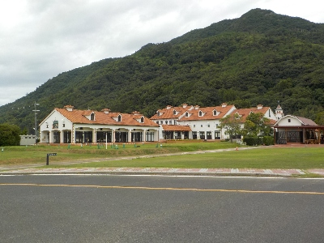
3連休で出雲大社は人が多かったです。ワイナリーも賑わっていました。
ワインの賞で金賞をになったって看板がありました。美味しいんだろうな。
2500円くらいなら買ってもいいけど、何か理由が欲しいな。
2024/06/08
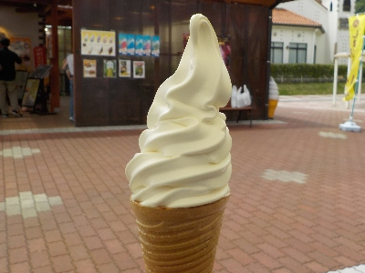
観光地だとオリジナルのソフトクリームを食べるんですが、よく行く場所なので普通にバニラ味を選んで食べました。
普通にミルキーで美味しい。
観光地のソフトクリームなのでちょっと高いですが、リゾート気分を味わえるので十分価値があるかなと思いました。
2024/04/06
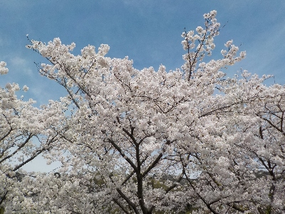
出雲大社に花見に行く途中に島根ワイナリーで花見をしました。
ワイナリーには何故か桜の木が多く植えられています。
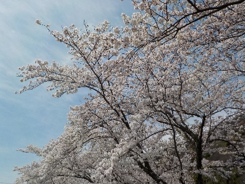
満開です。
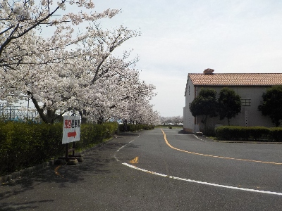
ワイナリーの外周に桜は植わっています。舗装されているので歩いて見やすいし、車の中からも花見ができます。
2021/07/10
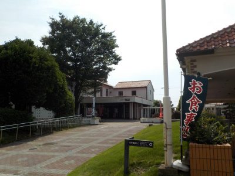
都会はコロナ感染者が増えていますが、島根は少ないので観光客が増えてるかなと思ったんですが、多くはなかったです。
山陰限定、島根県民限定〇〇って感じのキャンペーン効果って観光地では少ないのかな。
観光地より大型店やディスカウント店の方が確実に混んでますね。
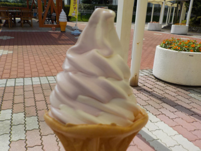
ミックスソフトを食べました。バニラとブドウ味のミックスです。
スプーン使って食べたので、それぞれの味が楽しめました。
観光地は空いてるみたいなので、他の場所にも遊びに行こうかな。
2020/12/12
お昼時で観光バスのお客さんが多くいらっしゃってました。喫茶の方はコロナの影響で閉店してて寂しいですが、バーベキューハウスは賑わってました。
1500円の焼肉定食を食べに行きたいって思いました。
試食はコロナ予防でなくなっていましたが、試飲はやってました。
以前は大きいボールにワインが注がれていて、それを汲んで試飲していましたが、今はワインボトルからセルフでカップに注ぐ方法に変わっていました。
小さいカップにオタマですくってワインを入れるのが面倒だったんですが、ボトルから注ぐのはとっても簡単なので飲みやすくなってました。（飲みませんでしたが。）
2016/07/30
30日は島根ワイナリーは30周年記念で島根和牛コースが半額！
18：30からは遠藤波津輝さんのライブ
19：00からはあべand夢海さんのライブってあったので、
夕方出かけました。
でも行ってみると、「本日は予約のため、オーダーは終了致しました。」と張り紙がしてありました。
え、
そうなんだ。
一般客は関係なかったんだ。
残念でした。
きっと縁がなかったんですね。
楽しみにしてたのになー。
2013/05/06
大社の帰りの休憩場所は、やっぱ島根ワイナリーですよね。
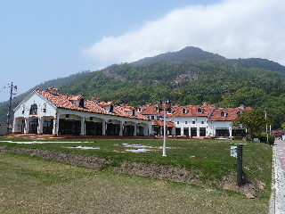
トイレ休憩でもいいですし、ワイン試飲、ジュース試飲、お菓子試食、おつまみ試食したりします。
今日も試食させてもらいました。
クレープを売店で売るようになったんですね。
今日はお腹空いていなかったので食べなかったんですが、次機会があったら食べたいって思いました。
2010/04/18
コロッケのいい香りがしたので買って食べました。
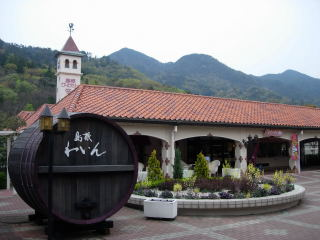
こっちの売店はお客さんがいなくて空いてて良かったです。ベンチに座ってのんびり食べれました。
お土産物やワインを販売しているレジの方に割引券が置いてありますので、それを持って買いに行くといいです。
2009/11/23
夕方に近くを通ったので寄ってみました。
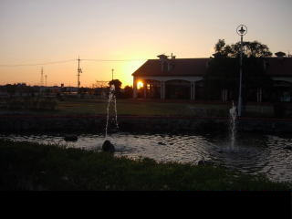
普段ワイナリーに行くと、色んな種類の試食品があるので、色々と味見するんですが、夕方になると試食品ってなくなっちゃうんですね。
夕方に出した食べ物が残っちゃうと、捨てないといけないのでもったいないですもんね。仕方ないです。
次からは明るい時間に寄ることにします。
今日は熱々のコロッケを食べて帰りました。
2009/10/17
09’ぶどう収穫感謝祭 ワインまつりに行きました。
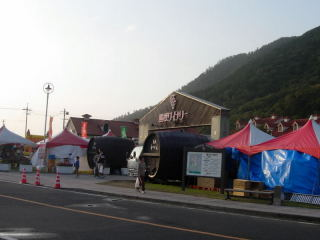
先着1000食限定で、ワインまつり特別バーベキューが500円で食べれるんですが、お昼時に行くと大渋滞の上に駐車場がないので、夕方に行って見ました。
お客さんは普段よりも多いですが、駐車場は空いてて車を止めやすかったです。
でもイベントを見たり参加したりするわけでもなく、普通に買い物をするだけだったら今日行く必要はなかったかなと思いました。
やっぱりワインまつりはバーベキューがなくちゃ！って思いました。
2009/6/12
出雲そばが名物なので、当然あってもよさそうなご当地ソフトクリームですね。もっと色んなお店で販売しててもよさそうですが、ここでしか見た事ないです。
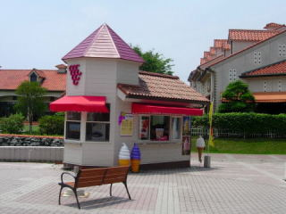
甘めのミルクソフトに、そばの粉が入ったようなソフトでした。そばのちょっと香ばしい風味がしました。
2009/5/3
ゴールデンウィークの暇つぶしに島根ワイナリーに行きました。
名物（？）の牛肉コロッケを食べたんですが、新タマの季節なので、コロッケの中のタマネギが甘く柔らかくって美味しかったです。食べるなら今が一番美味しいかも？って思いました。
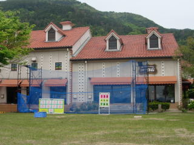
ワイナリーの建物の中は観光客でいっぱいでしたが、屋外のちょっとしたイベントスペースはガラガラでした。ゴールデンウィークのお客さんは忙しそうな人が多いなって思いました。
2008/10/18
ワインまつり特別メニューの焼肉（1000円）を食べに行きました。
しまね和牛肉、豚肉盛り合わせ、野菜盛り合わせ、おにぎり、ソフトドリンク飲み放題で1000円は安いですよね。
しまね和牛があって1000円だから、全体的に量がちょっとしかないんじゃないかと思って行ったんですが、おにぎりの量が多くあったので、お腹いっぱいになりました。
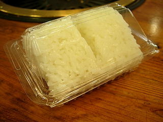
お肉をいっぱい食べたって気には正直なりませんでしたが、1000円で焼肉屋気分が味わえるのはいいなって思いました。またチャンスがあったら行きたいです。
2006/10/14
今年は島根ぶどう共販50周年・島根ワイナリー創立20周年記念ってことなのでちょっと派手かなって思って行ったんですが、会場の雰囲気はいつものワインまつりと同じ感じでした。
ワイナリーって地元の特産品が色々試食しながら買えていいですよね。しかも変わった商品が沢山置いてあるので、見てて面白いです。
お昼前とかに行くと大渋滞で、ワイナリーに着くまでに凄く時間がかかっちゃうので今日は朝9時半くらいに行きました。
駐車場もまだ空きが沢山あるし、お客さんの人数もまだ多くないので、試飲や試食、青空市もゆっくり見れました。お昼ご飯をワイナリーで食べようって思わなければ朝一で行くのが一番良さそうですね。
10時半くらいに帰ったんですが、そのころには駐車場内はだいぶん混んでました。
2006/8/19
映画ミラクルバナナにちなんだ商品です。ミラクルバナナって言うくらいなのでバナナが入ったお酒だと思ってんですが、実際は入ってなくて白ワインに香料でバナナとマンゴーが使ってあるだけの商品でした。なーんだ。
味はとっても濃くて甘す過ぎるので、そのまま飲めなくはないですが、何かで割って飲んだほうが正解な気がします。
実際ミラクルバナナを売ってる所に、カクテルのレシピが置いてあったのでメーカー的にもそう思ってるんじゃないでしょうか。
私は炭酸水で割って飲んだんですが、元がワインなのでマイルドなチューハイな感じで美味しかったです。
2006/8/19
普通のソフトクリームと巨峰ソフトが以前から売ってたんですけど、新しくミラクルバナナソフトとワインソフトが加わってました。
どっちを注文しようか迷った末、これからも続けて販売しそうなワインソフトを食べました。（ミラクルバナナ関連は映画が終わったらなくなる感じがしちゃうんですよね。）
ワインソフトの味ですが、ワイナリーで売ってるぶどうジュースの味がしました。
これぞご当地ソフトって感じでいい商品ですね。デラウェアの味がよくわかる味で、ちょっとシャーベットっぽい食感がひんやり爽やかな感じでなかなかいい感じでした。